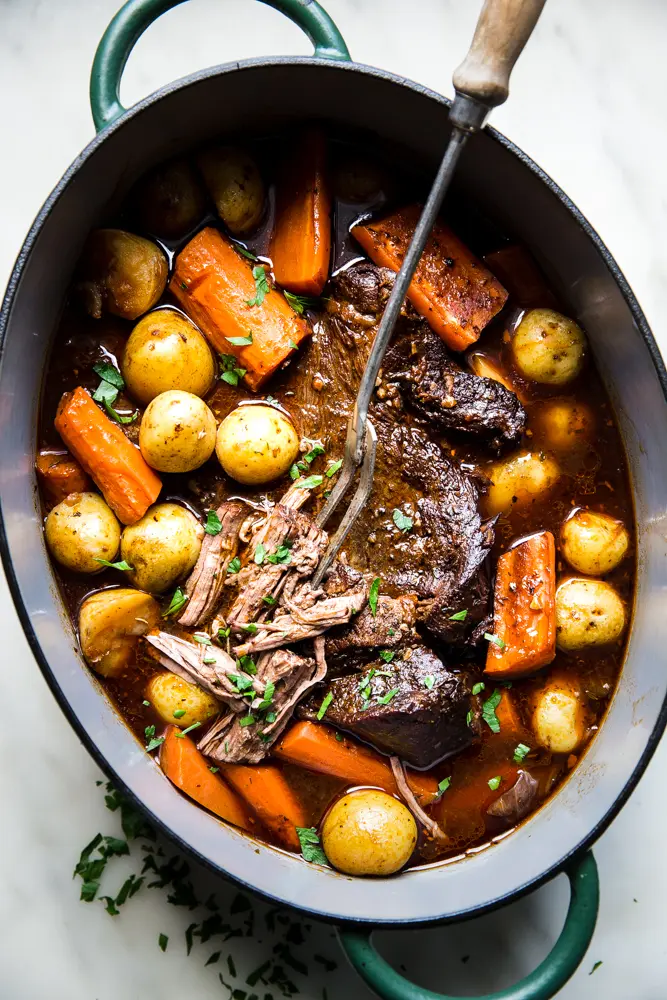

InstaPot Roast

- 4 lbs., beef chuck roast
- Kosher salt and pepper, to taste
- Fresh herbs, thyme and rosemary
- Mushrooms
- 4 cloves, garlic
- 1 Cup, beef broth
- Let meat come to room temperature - about a couple hours on the counter.
- With the meat patted dry, season all sides with salt and pepper
- In a preheated saute pan with a little olive oil, sear all sides of the meat.
- Place meat in an InstaPot. Place lid on and make sure sealing valve is in the correct position. With the manual setting engaged, set the time for 60 minutes.
- When timer goes off, release the pressure valve.
- Remove meat from the InstaPot, and set aside to rest for at least 15 minutes.
- Enjoy on top of cauliflower puree with a complex, yet approachable red wine of your choosing, preferably on the dry side, though fruit forward varieties - read: Southern Californian Pinot's - will go nicely with this dish. Enjoy!